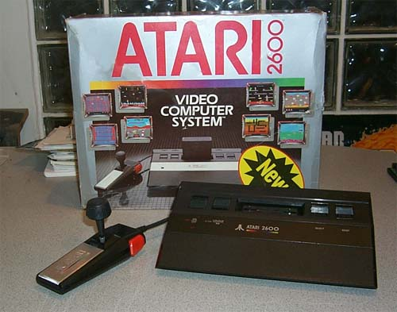
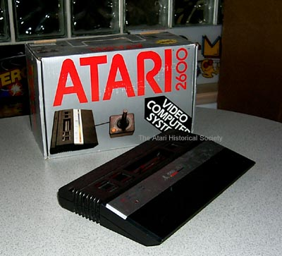
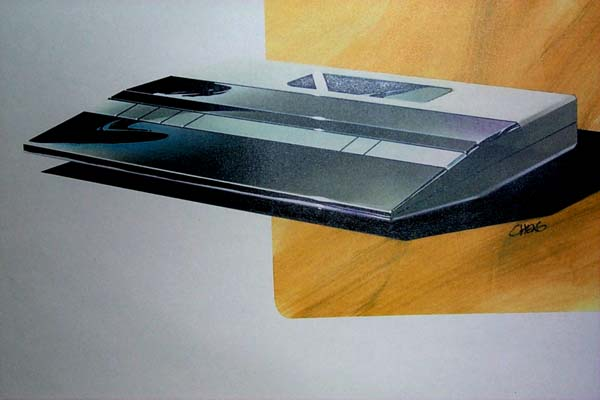

Original 1984 packaging and console styling.
cx24 "Super Controller" as the
box refers to the joystick was included.
The photo on the box shows
a different handle on the cx24 joystick
as well.
The Atari 2600jr. was the last version of the Video Computer System to be sold. It was introduced by Atari Corp in 1986. However the Atari 2600jr. was originally designed in 1983. The Atari 2600jr was codenamed "Bonnie" and was designed to be a joystick-less version of the Atari CX-2000 "Val" system. Val was to be an all-in-one low cost Atari 2600 with built in joysticks. However the joysticks were extremely flimsy and the case design was not as appealing as many other Atari case designs. The Atari 2000 was re-designed into the Atari 2600jr, basically the same motherboard design, less the built in joysticks, and also with the cartridge interface on the top of the unit instead of the rear of the unit. The marketing concept was simple: Competition in the video game industry was at an all time high, the Atari 2600jr. would be a simple low cost Atari 2600 packaged with only 1 joystick, no paddle controllers, and 1 game cartridge. Packaged into a small "lunch-box" carton, the game system would sell for about $50.00 and appeal to younger gamers. The whole project was placed on hold due to the sale of Atari, Inc. to the Tramiels. The Atari 2600jr. was not released until 1986, most Atari 2600jr's were sold in a plain brick red/white box design.

1986 "Lunchbox" packaging, original cx40
joystick
replaced the originally intended cx24
Proline joystick.
HISTORAL NOTE: The Atari
2600 case design is the same exact design that was going to be used for
the Atari 2600 Voice Commander Module which was designed by Milton Bradley
for Atari. The unit was never released.
Atari's Mark Biassotti designed the all new hi-tech Atari 2600jr case as
well as the Atari 5100 (Little PAM) case as well. Before Mark's
design, Regan Cheng designed the initial concept of a new low profile Atari
2600jr case, giving it a look very similar to the design of the Atari 1200XL
look.

The Atari 2600Jr was planned to utilize a new chip: codenamed "JAN" which was to
combine the 6507, 6532 and the Atari TIA into a single chip.
The original schematic for this design is available below:
{kind=link}